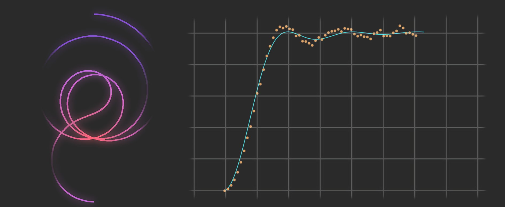
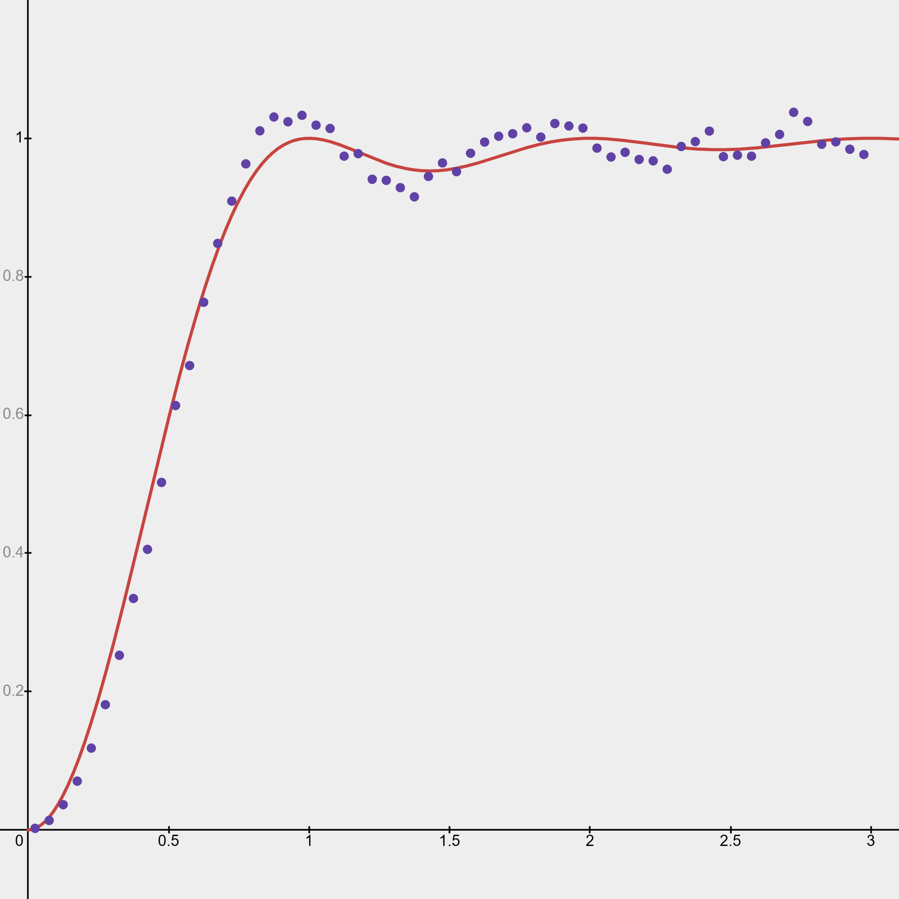
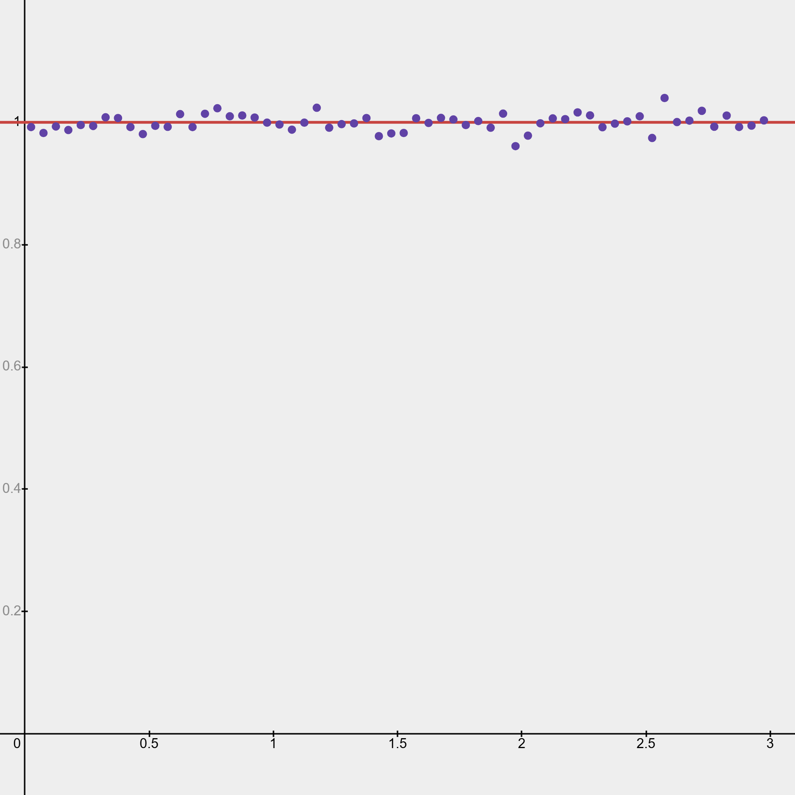
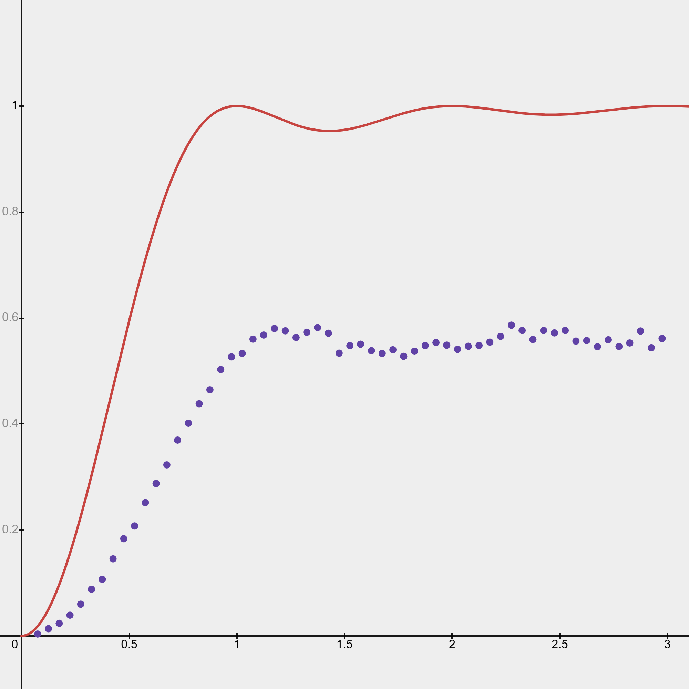

Montgomery's Pair Correlation Conjecture

1) Introduction
The Montgomery's pair correlation conjecture is a conjecture about the roots of the Riemann $\zeta$-function (Riemann Zeta function).For $\Re(s)>1$ the $\zeta$-function is defined as \[\zeta(s)=\sum_{n=1}^\infty\frac{1}{n^s}=\prod_{p\text{ is prime}} \frac{1}{1-p^{-s}}\] Given that a product can only be zero if one of its factors are zero (or if its infinite factors converge to a value with absolute value smaller than one), and that $\frac{1}{1-p^{-s}}\rightarrow 1$ ($p\rightarrow\infty$) this function has no roots. By analytic continuation to $\Re(s)>0$ \[\zeta(s)=\frac{1}{1-2^{1-s}}\sum_{n=1}^\infty \frac{(-1)^n}{n^s}\] And it is exactly the roots of \[\sum_{n=1}^\infty \frac{(-1)^n}{n^s}\] that are the non-trivial roots of the Riemann $\zeta$-function.
The Riemann Hypothesis is the hypothesis that all the roots have real part, $\Re(s)=\frac{1}{2}$. And the pair correlation conjecture is the conjecture that, when $1/2+\gamma$ and $1/2+\gamma'$ are both roots (with imaginary part greater than 0) of the Riemann $\zeta$-function (assuming the Riemann Hypothesis) \begin{equation}\label{first_formulation} \frac{\left|\left\{(\gamma, \gamma'): 0<\gamma, \gamma'\leq T, 2\pi \alpha \left(\log T\right)^{-1} \leq \gamma-\gamma'\leq 2\pi \beta \left(\log T\right)^{-1}\right\}\right|}{\frac{T}{2\pi} \log T}\sim \int_\alpha^\beta\left(1-\left[\frac{\sin \pi u}{\pi u}\right]^2\right)du \end{equation} as $T\rightarrow \infty$.
Written in english, this conjecture says that the number of pairs of roots of the $\zeta$-function between $0$ and $T$, with difference greater than or equal to $\frac{2\pi \alpha}{\log T}$ but less than or equal to $\frac{2\pi \beta}{\log T}$ gets closer and closer to $\frac{T}{2\pi}\log T\int_\alpha^\beta \left(1-\left[\frac{\sin \pi u}{\pi u}\right]^2 \right)du$ as $T$ goes to infinity.
1.1) Why do we care?
This conjecture tells us that small gaps between roots are very infrequent, roots seem to "repel" eachother (John Derbyshire, Prime Obsession).More specifically, this distribution, as Dyson pointed out to Montgomery, is exactly the pair correlation for eigenvalues of Gaussian unitary ensembles. Dyson studied these eigenvalues, because the spacings between lines in the spectrum of heavy atom nuclei are modelled by the spacings of eigenvalues in a Gaussian unitary ensemble (Wikipedia). This would be a link between the Riemann $\zeta$-function and quantum mechanics, but its not the only link that has been conjectured.
Hilbert-Pólya conjecture states that the roots of the $\zeta$-function are eigenvalues of a Hermitian matrix, this conjecture implies the Riemann hypothesis. It would therefore make sense (atleast in the heuristic sense), given that these roots seem to describe the eigenvalues of a random matrix, that this matrix would be Hermitian (since Hermitian matrices correspond to operators of quantum mechanics - Wikipedia) and the Riemann hypothesis would be confirmed (Andrew Odlyzko, On the Distribution of Spacings Between Zeros of the $\zeta$-Function).
2) Gathering evidence
To speed up computations, we'll use the following, equivalent formulation of the Montogmery pair correlation conjecture. If we let $N$ be the number of roots we'll consider, then \begin{equation}\label{second_formulation} \frac 1 N |\{(n,k):1\leq n\leq N, k\geq 0,\delta_n+\cdots+\delta_{n+k}\in[\alpha,\beta[\}| \sim\int_\alpha^\beta \left(1-\left[\frac{\sin \pi u}{\pi u}\right]^2\right)du \end{equation} Where $\delta_n$ is the normalized spacing between roots, meaning that the average spacing is $1$. This spacing is: $\delta_n=\frac{\gamma_{n+1}-\gamma_n}{2\pi}\log{\frac{\gamma_n}{2\pi}}$, where $\gamma_n$ is the $n$'th smallest (positive) imaginary part of a root of the Riemann $\zeta$-function. To find the density we take small intervals of $[0,3]$, $I_n=[0.05n,\space0.05(n+1)[$, $n\in[0,\space60[$
Figure 1: The pair correlation of the first $10^5$ zeros of the Riemann $\zeta$-function.
Meaning that $T=74920.8275$. A purple dot is plotted at the point $x=(\alpha+\beta)/2$ and $y=\frac{1}{10^5}\left|\left\{n,k:\space 1\leq n\leq 10^5,k\geq 0,\delta_n+\cdots +\delta_{n+k}\in[\alpha,\beta[\right\}\right|$.The solid red line is the function $y=1-\left(\frac{\sin\pi x}{\pi x}\right)^2$

Figure 2: For comparison, here's the pair correlation for random numbers between $0$ and $10^5$
Figure 1 was generated by plotting points in desmos, these points were given by the following algorithmspacings = [ .. . ] //Array of normalized spacings between consecutive roots
alpha = .. . //The minimum desired size of spacing between two roots
beta = .. . //The maximum desired size of spacing between two roots
counter = 0
for i from 0 to len (spacings) - 1
sumSpacings = 0
for j from i to len (spacings) - 1
sumSpacings + = spacings[j]
if (sumSpacings > = beta)
break
end if
if (alpha < = sumSpacings)
counter + = 1
end if
end for
end for
output counter / len (spacings)3) Final notes
When choosing between the two formulations, (\ref{first_formulation}) or (\ref{second_formulation}), its important to remember, if you choose the first formulation, that $\alpha$ and $\beta$ are fixed, but that $T$ should be constantly increasing through your calculations. This is the resulting pair correlation if you let $T$ stay fixed